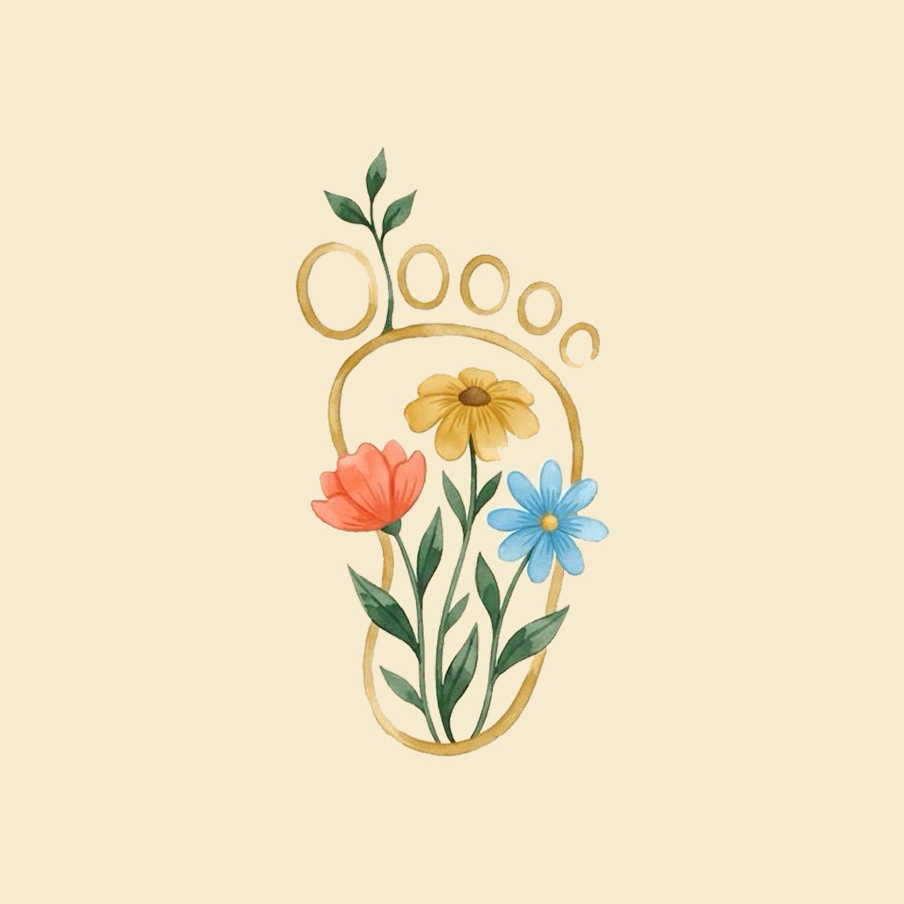

Fadime Tek
ÖğretmenSınıf içi etkinlikler ve çocukların günlük gelişim takibinden sorumlu deneyimli öğretmen.

Tomurcuk KidsEkibimiz
Tomurcuk Kids'te her çocuğa uzman kadro eşlik eder. Psikolog, öğretmen ve yardımcı personelden oluşan ekibimiz; güvenli, sıcak ve gelişim odaklı bir ortam sunar.
Sınıf içi etkinlikler ve çocukların günlük gelişim takibinden sorumlu deneyimli öğretmen.
Kurucu ve Çocuk-Ergen Psikoloğu. Çocukların duygusal ve davranışsal gelişimini bilimsel yaklaşımla destekler.
Oyun temelli İngilizce etkinlikleriyle çocukların erken yaşta dil ile tanışmasını sağlar.
Çocukların sosyal ve bilişsel gelişimine rehberlik eden, etkinlik ve oyun düzenlemelerinde görev alan öğretmen.
Sınıf düzeni, hijyen ve beslenme desteğiyle çocukların temiz ve güvenli bir ortamda vakit geçirmesini sağlar.